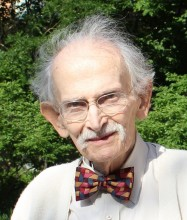

Please note: the AAS Obituaries are temporarily being hosted on this website while their full content is being ingested into the PubPub publishing platform newly adopted by the Bulletin of the American Astronomical Society. When the migration is complete, your existing links will take you to the final, migrated content. Contact peter.williams@aas.org with any questions.
Gart Westerhout (1927-2012)
The Early Years
Gart Westerhout was born 15 June 1927 in The Hague, The Netherlands. He was the son of Gart Westerhout, an architect, and Magda Foppe, an author. His interest in astronomy dates from when his father designed a sanitarium for tuberculosis patients who could gaze at constellations while lying on their backs. Prompted by reading several popular books about astronomy, he became a student at Leiden University in 1945. In early 1950 he started research in radio astronomy, working with Jan Hendrik Oort on a model of the Galactic continuum radiation (Westerhout and Oort 1951, BAN 11, 323), and then became heavily involved in the first 21-cm Galactic hydrogen-line studies carried out with the Kootwijk Wurzburg antenna. In 1954 he had a five-month stint of military service that was cut short when Oort convinced the State Council that his work was indispensable to the Observatory. In 1955 he and Maarten Schmidt developed the first detailed 21-cm map of the Milky Way that showed the first hints of spiral structure in the interstellar gas, revealed differential rotation in our Galaxy, and established a revised Galactic coordinate system still in use today. After 1956, using the Dwingeloo 25-meter radio telescope, Westerhout worked on a major 75-cm survey (Seeger, Westerhout, Conway, Hoekema 1965: BAN 18, 11), and carried out early work on polarization of the Galactic background radiation. He used the Dwingeloo antenna to produce the "Westerhout Radio Catalog" that eventually identified 79 sources that were continuum emitters including some of the largest star formation regions in the Milky Way. During these exciting times at Leiden he was among the youngest in a pioneering group of his contemporaries that included Hendrik van de Hulst, Hugo van Woerden, C. Lex Muller, Maarten Schmidt, Lodewijk Woltjer, and Charles L. Seeger, Jr. (son of the ethnomusicologist and brother of Pete Seeger). Other students included Wim Brouw, Mike Davis, Ernst Raimond, Whitney Shane and Jaap Tinbergen. While at Leiden University, he held the posts of Assistant (1952–56), Scientific Officer (1956–59), and Chief Scientific Officer (1959–62). He was awarded Physics and Astronomy degrees from the University of Leiden: Cand. (1950) and Drs. (1954) and was awarded a Ph.D. in Astronomy and Physics in 1958. At his first IAU General Assembly, at Dublin in 1955, Gart met Judith Monaghan, who worked at the Dublin Institute for Advanced Studies; they fell in love and were married a year later.
The Maryland Years
Westerhout came to the US in 1962 as Professor and Director of Astronomy at the University of Maryland where, during the next 15 years, he grew a 12-graduate-student department into one of the nation’s prominent astronomy programs. In 1972, Dr. Westerhout organized the University of Maryland's division of mathematical, physical and engineering sciences and was named its head the next year. He continued his research with a 21-cm survey that used the 91-m radio telescope of the National Radio Astronomy Observatory to extend to higher angular resolution our knowledge of Galactic structure. He often flew a rented plane between Maryland and Green Bank with his programmer, Heinz Wendtland. He continued at Maryland in that role through 1973, with additional responsibilities from 1972-73 as Chairman of the Division of Mathematical & Physical Sciences and Engineering. He was a Visiting Astronomer at the Max-Planck-Institut für Radioastronomie (MPIfR) in Bonn, Germany in 1973-74.
The US Naval Observatory Years
From 1977-1993 he left the University of Maryland to become the Scientific Director of the U.S. Naval Observatory in Washington DC. While there, he guided the evolution of that observatory toward astronomical data obtained from telescopes at the Flagstaff station. He initiated the radio astrometry in 1979 by using the Green Bank interferometer to improve the absolute positions of celestial objects by a factor of ten over the optical. It yielded measurements of the Earth orientation parameter UT1 that were a factor of four better than the PZTs. In the 1980s, he converted to VLBI, again increasing the precision by a factor of ten. Again in the 1980s he looked into the use of optical long base line astrometry for absolute positions. This now achieves about an order of magnitude precision over other ground-based measurement but is not as precise as space-based measurements. Again in the 1980s, he introduced the use of CCDs at Flagstaff’s parallax program that supplanted the use of optical plates, improving the precision by a factor of five. He was responsible for a major expansion of the organization and construction of a network of five radio telescopes from Florida to Hawaii that measured the rotation of the Earth. Westerhout retired in 1993.
Westerhout, Personal Recollections and Characteristics of a Warm Friend and Colleague
Gart Westerhout was an amiable and affable man, a great and noble man, with an exceptional sense of humor and an infectious laugh. We wore a bow tie and had flamboyance seldom found among his academic colleagues. In his early career he smoked cigars, a signature identification. He and Judith became American citizens in 1969. They loved to entertain, and their friendships went far beyond his profession. He was an avid O-gauge model railroader and maintained a detailed layout that took up most of the basement space in his home. He was a communicant of St. Thomas Aquinas Roman Catholic Church in Hampden.
Memberships
Westerhout was a member of numerous astronomical organizations, including the Dutch Astronomical Society, International Astronomical Union (Commissions 33, 34, 40, 24 & 5), American Astronomical Society (Councilor 1975-78 & Vice President 1985-87), Royal Astronomical Society and the Astronomical Society of the Pacific, International Scientific Radio Union (URSI), and Sigma Xi.
He contributed his scientific and management expertise widely, for example to IAU, National Science Foundation (NSF), AAS, National Research Council, Associated Universities Inc., Inter-Union Committee for the Allocation of Frequencies (IUCAF), URSI, National Radio Astronomy Observatory, MPIfR, MIT's Haystack Observatory, Arecibo Observatory, and the National Academy of Sciences.
Awards
Westerhout’s awards and special recognition included a NATO Fellowship, a CSIRO (Australia) Fellowship, an Award for the Teaching of Science, Washington Academy of Sciences, Humboldt Prize, and listings in: Outstanding Educators of America, American Men and Women in Science, and Who's Who in America.
Bibliography
Westerhout was the author of more than 70 scientific papers, reviews and reports. In recognition of his life's work, Minor Planet 5105, discovered by Edward L. G. Bowell, was renamed Minor Planet Westerhout in 1991.
Death
Gart Westerhout died of congestive heart failure on October 14, 2012, at the age of 85 in his home at the Charlestown Retirement Community, Apt BR 502, 715 Maiden Choice Lane, Catonsville, MD 21228. He is survived by his wife of 56 years, the former Judith Monaghan of Catonsville, Maryland; two daughters, Magda Westerhout Mobley of Roland Park and Brigit Molony of Catonsville; and two sons, Gart Thomas Westerhout in Osugi, Japan, and Julian Westerhout in Bloomington, IL, six grandchildren, and one sister, Marianne Thunnissen in The Netherlands. Dr. Westerhout had lived for three decades in Adelphi before moving to Baltimore and later to Catonsville.
Donations in Gart's name may be made online or by post to: Educational Projects, American Astronomical Society, 2000 Florida Ave., NW, Suite 400, Washington, DC 20009-1231.
Detailed Bibliography for Gart Westerhout (supplied by William E. Howard)
- Papers published in refereed journals
-
Astronomy research
- "A Comparison of the Intensity Distribution of Radio-Frequency Radiation with a Model of the Galactic System," (with J. H. Oort), Bull. Astron. Inst. Neth., 11, 323, 1951.
- "The Rotation of the Inner Parts of the Galactic System," (with K. K. Kwee and C. A. Muller), Bull. Astron. Inst. Neth., 12, 211, 1954.
- "Search for Polarization of the Crab Nebula and Cassiopeia A at 22 cm Wavelength," Bull. Astron. Inst. Neth., 12, 309,1956.
- "The Flux Densities of some Radio Sources at 400 Mc/s," (with C. L. Seeger and H. C. van de Hulst), Bull. Astron. Inst. Neth., 13, 89, 1956.
- "Continuous Radiation from the Direction of the Galactic Centre at 22 cm," Bull. Astron. Inst. Neth., 13, 105, 1956.
- "A Catalogue of 21-cm Line Profiles," (with C. A. Muller), Bull. Astron. Inst. Neth., 13, 151, 1957.
- "The Distribution of Atomic Hydrogen in the Outer Parts of the Galactic System," Bull. Astron. Inst. Neth., 13, 201, 1957.
- "Observations of Occulations of the Crab Nebula by the Moon at 400 Mc/s," (with C. L. Seeger), Bull Astron. Inst. Neth., 13, 312, 1957.
- "Intensites Relatives des Quatre Principales Radiosources Observees sur la Longueur d'Onde 22 cm; Note sur la Radiosource Saggittarius A", Compt. Rend. Acad. Sci. Paris, 245, 35, 1957.
- "Observations of Discrete Sources, the Coma Cluster, the Moon, and the Andromeda Nebula at a Wavelength of 75 cm.," (with C. L. Seeger and R. G. Conway), Astrophys. J., 126, 585, 1957.
- "A Survey of the Continuous Radiation from the Galactic System at a Frequency of 1390 Mc/s," Bull. Astron. Inst. Neth., 14, 215, 1958.
- "Note on the Density of Ionized Hydrogen in the Galactic System," Bull. Astron. Inst. Neth., 14, 261, 1958.
- "The Galactic System as a Spiral Nebula," (with J. H. Oort and F. J. Kerr), Monthly Notices Roy. Astron. Soc., 118, 379, 1958.
- "The New I.A.U. System of Galactic Coordinates," (with A. Blaauw, C. S. Gum and J. L. Pawsey), Monthly Notices Roy. Astron. Soc., 121, 123, 1960.
- "A 21-cm Determination of the Principal Plane of the Galaxy," (with C. S. Gum and F. J. Kerr), Monthly Notices Roy. Astron. Soc., 121, 132, 1960.
- "Die Durchmusterung Der Milchstrasse Und Die Quellendurchmusterung Bei 2.7 Gllz," (with W. Altenhoff, P. G. Mezger and H. Wendker), Veroffentl. Sternwarte 59, Bonn, November 1961.
- "The Polarization of the Galactic 75-cm Radiation," (with C. L. Seeger, W. N. Brouw and J. Tinbergen), Bull. Astron. Inst. Neth., 16, 187, 1962.
- "The Structure of the Galaxy from Radio Observations," I.E.E.E. Trans., AP-12, 954, 1964.
- "A Survey of the Continuous Radiation at 400 Mc/s," (with C. L. Seeger, R. G. Conway and T. Hoekema), Bull. Astron. Inst. Neth., 18, 11, 1965.
- "A Catalogue of Discrete Sources Observed at 400 Mc/s," (with M. M. Davis and L. Gelato-Volders), Bull. Astron. Inst. Neth., 18, 42, 1965.
- "21-cm Line Emission in Open Clusters," (with W. E. Howard and C. Gordon), Astrophys. J., 154, 103, 1968.
- "The Maryland – Green Bank Galactic 21-cm Line Survey" (with H.-U.Wendlandt), Astron. Astrophys. Suppl. 49, 143, 1982.
- "Telescope Beam Characteristics and Temperature Scale of the Maryland- Green Bank 21-cm Line Survey" (with G.L.Mader and R.H.Harten), Astron. Astrophys. Suppl. 49, 137, 1982.
- "Astrometry and Precise Time", with G.M.R.Winkler, Oceanus 33, 89–95. 1991
- Instrumentation or techniques
- "Table for the Reduction of Velocities to the Local Standard of Rest" (with D. A. MacRae), The Observatory, Lund, Sweden, 1956.
- "A Method for Accurately Compensating for the Effects of the Error Beam of the NRAO 300-foot Radio Telescope at 21-cm Wavelength," (with H.-U. Wendlandt and R. H. Harten), Astron. J., 78, 569, 1973.
- "Hydrogen 21-cm Line Temperature scale", (with R.H.Harten and F.J.Kerr), Astron.J., 80, 307, 1975
-
Astronomy research
- Papers presented at scientific meetings
-
Invited papers
- "Kosmische Bronnen Van Radiostraling," (with H. C. van de Hulst), Sterr. Coll. Ned. Astr. Club., 13, 1956.
- "A 21-cm Line Survey of the Outer Parts of the Galaxy," In IAU Symp. 4, ch. 5, Cambridge Univ. Press, 1957.
- "Progress Report on 21-cm Research by the Netherlands Foundation for Radio Astronomy and the Leiden Observatory," In IAU Symp 4, ch. 4, Cambridge Univ. Press, 1957.
- "Galactic Radiation and its Physical Interpretation", Introductory Report, Comm. V, URSI 13th General Assembly, London, 1960.
- "A Summary of our Knowledge of the Neutral Hydrogen in Galaxies", In Problems of Extra-Galactic Research, McMillan and Co., New York, 1962.
- "Current Radio Astronomical Research in the Netherlands", Proc.I.R.E. Austr., 24, 214, 1963.
- "The Interpretation of Recent 21-cm Line Data in Terms of Large-Scale Galactic Structure," IAU Symp. 20, Australia, 1963.
- "Observation and Interpretation of Optical and Radio Polarization," IAU Symp. 20, Australia, 1963.
- "Three Years of Galactic Radio Astronomy," Proc. of URSI General Assembly, Tokyo, 1963.
- "Brightness Temperatures Expected for a Radio Telescope with High Resolving Power," In Proc. OECD Symp. on Large Antennae, Paris, 1963.
- "Site Requirements," In Proc. OECD Symp. on Large Antennae, Paris, 1963.
- "The Early History of Radio Astronomy", In International Conference on Education in and History of Modern Astronomy, ed. R. Berendzen, Ann. New York Acad. Sci., 198, 211, 1972.
- "Some Remarks on the Ideal Automated Observatory," In NRAO/IEEE/URSI Symp. on the Collection and Analysis of Astrophysical Data, ed. R. Burns, Astron. Astrophys. Suppl., 15, 327, 1974.
- "The Influence of Acquisition Techniques on the Compilation of Astronomical Data", in IAU Colloquium 35 on Data Compilation, Strasbourg 1976, ed. Jaschek and Wilkins, Reidel, Dordrecht, Astrophys. and Space Sc. Lib 64, 49, 1977
- "Future Development in U.S. Naval Observatory Time Services",Proc. 9th Ann. PTTI meeting, NASA Tech. Mem. 78104, 1, 1978
- "Radio Astrometry and Other Accurate Astrometry Plans at the U.S. Naval Observatory", ESA Colloquium on European Satellite Astrometry, Padua, Ed. C.Barbiery and P.L.Bernacca, Universita di Padova 1979
- "Space Astrometry – its Impact on Astronomy and Astrophysics", Highlights of Astronomy Vol.5, 779, Ed. P.A.Wayman, Reidel Dordrecht 1980
- "Early Dutch Radio Astronomy", URSI General Assembly Comm. J, Washington 1981, Ed. W.T.Sullivan (not published).
- "The Pioneers of HI", in "Seeing through the Dust", eds. A.R.Taylor, T.L.Landecker, A.G.Willis, Astron. Soc. Pacific Conf.Ser. 276, 3, 2002
- "The Start of 21-cm line Research: the Early Dutch Years", in "Seeing Through the Dust", eds. A.R.Taylor, T.L.Landecker, A.G.Willis, Astron. Soc. Pacific Conf.Ser. 276, 3, 2002
- Contributed papers
- "75-cm and 22-cm Continuum Surveys," In IAU Symp. 9, ch. 80, Stanford Univ. Press, 1959.
- "75-cm Galactic Background Polarization: Progress Report," (with W. N. Brouw, C. A. Muller and J. Tinbergen), Astron. J., 67, 590, 1962.
- "Radio Studies of HII Regions and Galactic Structure," (with M. Komesaroff), IAU Symp. 20, Australia, 1963.
- "Galactic 21-cm Iine Observations at Green Bank," Astron. J., 69, 152, 1964.
- "Preliminary Observations of 21-cm Line Emission in Open Clusters," (with W. E. Howard), Astron. J., 70, 688, 1965 (Abstract).
- "The Maryland-Green Bank Galactic 21-cm Line Survey'", IAU Symp. 31, Noordwijk, Netherlands, 173, Acad. Press, 1967.
- "A Motion Picture Film of Galactic 21-cm Line Emission," IAU Symp. 38, paper 19, ed. G. Contopoulos and R. Becker), Reidel, Dordrecht, 1970.
- "A High-Resolution Polarization Survey of the North Polar Spur," (with D. Bechis), ln IAU Symp. 60, ed. F. J. Kerr and S. C. Simonson, Springer Verlag, 1974.
- "Progress Report on the Maryland-Green Bank Galactic 21-cm Line Survey, In IAU Symp. 60, ed. F. J. Kerr and S. C. Simonson, Springer Verlag, 1974.
- "The U.S.Naval Observatory Parallax Program" (with R.H.Harrington), Bull. d'Inf. Centre de Donnees Stell. 20, 24, 1981
- "Data on Time and Polar Motion: Immediate Accessibility" (with D.D.McCarthy), I.A.U. Colloq. 64, Automated Data Retrieval in Astronomy, Strasbourg, Ed. C.Jaschek, Reidel Dordrecht, 1982
- "U.S.Naval Observatory Parallaxes and the Fundamental Reference Frame – their Interaction with Hipparcos" (with J.A.Hughes), ESA Colloquium on Space Astrometry, Strasbourg 1982
- "Concluding Remarks," in IAU Symposium 109, Astrometric Techniques, H.K. Eichhorn and R. J. Leacock (eds), Reidel Dordrecht, 799–803, 1986
- "Fricke's Influence on the World of Astronomy," Celestial Mechanics 37, 345–348, 1985
- "The USNO/CALTECH Measuring Program" (with D. Monet), Bull d'Information du CDS 37, 75–78, 1989
- "Concluding Remarks," Bull d'Information du CDS 37, 91–92, 1989
- "Astrometry: New Vitality for an Ancient Science," Aerospace America 27, No. 10, 34–37, 1989
- "The Flagstaff Measuring Machine" (with D. Monet), in IAU Symposium 141, Inertial Coordinate System on the Sky, J.H.Lieske and V.K.Abalakin, Eds., Kluwer Dordrecht 1990
- "Concluding Remarks", in IAU Symposium 141, Inertial Coordinate System on the Sky, J.H.Lieske and V.K.Abalakin, Eds, Kluwer Dordrecht, 1990
-
Invited papers
- "The Radio Galaxy," Sci. Am., 201, 45, 1959.
- "The Mapping of the Galaxy, in Tomorrow was Yesterday, C.B.S., George Braziller, New York, 1964.
- "Distribution of Interstellar Hydrogen," (with F. J. Kerr), ch. 8, in Stars and Stellar Systems, vol. 5, p. 166, Univ. of Chicago Press, 1965
- "Radio Emission of the Galaxy," Comm. 40 report, IAU Trans. XII A, Acad. Press, 1965.
- "Galactic Radio Astronomy," Comm. 40 reports on Astronomy, lAU Trans. XIVA, 460, Reidel, Dordrecht – Holland, 1970.
- "Galactic Radio Emission in the 21-cm Line and the Continuum," In Galactic Astronomy, ed. H. Y. Chiu and A. Muriel, pp. 147–190, Gordon and Breach, 1971.
- "The Maryland-Green Bank Galactic 21-cm Line Survey," first edition, University of Maryland, Department of Physics and Astronomy, 1966.
- "Maryland-Green Bank 21-cm Line Survey," second edition, University of Maryland Astronomy Program, 1969.
Obituary written by: William E. Howard
Additional links:
- http://en.wikipedia.org/wiki/Gart_Westerhout
- https://aas.org/posts/news/2012/10/passing-gart-westerhout
- http://www.washingtonpost.com/local/obituaries/gart-westerhout-dies-at-85-dutch-born-astronomer-helped-chart-milky-way-built-astronomy-program-at-u-md/2012/10/17/8da8c7ee-1871-11e2-8bfd-12e2ee90dcf2_story.html
- http://rahist.nrao.edu/westerhout_bio-memoir.shtml
- http://articles.baltimoresun.com/2012-10-17/news/bs-md-ob-gart-westerhout-20121017_1_astronomy-milky-way-radio-waves
- http://www.umdphysics.umd.edu/images/pdfs/toll/westerhout.pdf
- http://umdarchives.wordpress.com/tag/gart-westerhout/
- http://www.bostonglobe.com/metro/obituaries/2012/10/19/gart-westerhout-astronomer-who-helped-chart-milky-way-dies/tLbkwyvVzZe2ELab1DPPPJ/story.html
BAAS Citation: BAAS, 2012, 44, 020